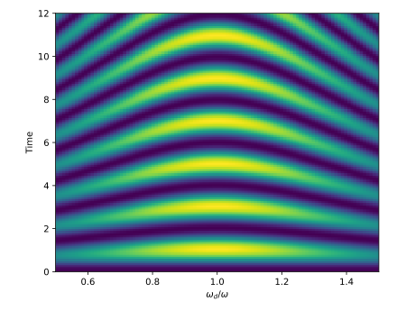

The Driven Two-Level System
The driven two-level system (TLS) is one of the very few non-trivial time dependent problem whose dynamics can be solved for analytically. As such it provides a good benchmark for numerical solvers, since we can easily quantify their performance.
The Hamiltonian
The Hamiltonian of a two-level system is usually expressed with a $\hat{σ}_z$ Pauli operator, but for simplicity, we use a normal number operator, which we multiply by the frequency of the transition between the ground state and the excited state: $\hat{H}_0 = \hbar ω \hat{n}$.
The drive consists of an oscillating field in a direction transverse to the TLS. We use a circularly polarized field, meaning that the component of the drive for the $g \rightarrow w$ transition is complex and is the complex conjugate of the component of the drive for the $w \rightarrow g$ transition. Explicitly, if the drive has strength $\gamma$ (in angular frequency units), the drive operator is:
where $\omega_d$ is the drive frequency.
Note that if the driving field is not circularly polarized, for example if the drive is $\hbar \gamma \hat{\sigma}_x \cos(\omega_d t)$ (corresponding to linear polarization), the dynamics of the system are no longer solvable analytically.
Numerics
Before starting the mathematical derivation, let's let the computer solve the problem for us:
using Schrodinger, PyPlot
# frequencies, starting state and number operator
ω = 1*2π
ωd = 0.9*2π
γ = π/2
g = basis(2,0)
n = numberop(2)
# drive function, p[1] is the frequency and p[2] is the drive strength
fd = (t,p) -> p[2]*cis(p[1]*t)
# solve it! we use a drive strength of γ (in angular frequency units)
# note the negative frequency for circular polarization
r1 = sesolve((ω*n, (σ₋,fd,[ωd,γ]), (σ₊,fd,[-ωd,γ])), g, (0.0,3.0), saveat=0.01)
plot(r1.times,levelprobs(r1.states)); grid();
xlabel("Time"); ylabel("Level Probabilities");
legend(["|g⟩", "|e⟩"]);Notice that we chose a drive frequency below that of the TLS frequency. This results in a TLS oscillation frequency higher than π (the drive strength), however, the excited state never gets fully occupied.
Derivation
We now derive the dynamics of the system analytically, so that we may verify our numerics.
First, we move to the interaction picture in order to ignore the precession about the z-axis. We are thus left only with $\hat{H}_I = e^{i \hat{H}_0 t / \hbar} \hat{H}_D e^{-i \hat{H}_0 t / \hbar}$. For a state with time dependent coefficients $c_0$ and $c_1$, the Schrödinger equation thus reads:
where $\Delta\omega = \omega_d - \omega$.
We thus have a system of coupled differential equations to solve, with initial condition $c_0(t=0) = 1$ and normalization $|c_0|^2 + |c_1|^2 = 1$. We first decouple the system by isolating $c_0(t)$ in the second equation, differentiating it and inserting the result in the second equation:
Finally, since the equation must be valid for all $t$, we drop the exponential to obtain a homogeneous second order differential equation:
At this point we guess a solution $c_1(t) \propto e^{i \alpha t}$ which, when inserted in the differential equation, gives a 2nd order polynomial in $\alpha$:
with solutions
where we have introduced the well know Rabi frequency $\Omega = \sqrt{ ( \Delta\omega/2 )^2 + \gamma^2 }$.
As expected, a second order differential equation gives us two solutions, with which we form the general solution:
We can eliminate $b$ by using the initial condition $c_1(t=0) = 0$, giving us $b = -a$. This allows us to simplify the general solution:
Finally, to determine the value of $a$, we insert the general solution back in the original differential equation for $c_1(t)$ and make use of the normalization property:
equating the equations and taking the absolute square:
The final solution for $c_1(t)$ then, up to a constant global phase is:
This equation is quite interesting, and it perfectly explains the non-trivial behavior of the driven TLS. It shows the switching frequency, which is the much celebrated Rabi frequency, and also shows that the maximum transfer probability from the ground to excited state $|c|^2$ is a Lorentzian with respect to $\Delta\omega$, the detuning between the drive and the TLS frequency:
Comparison
In order to compare to the simulation done at the beginning, we simply write a function that computes $c_1(t)$, and plot the outpout against the one from sesolve.
c₁(t,γ,Δω) = (Ω = √(γ^2+(Δω/2)^2); γ/Ω * cis(-Δω/2*t) * sin(Ω*t))
Δω = ωd-ω
c1 = c₁.(r1.times,γ,Δω) # compute data for c₁
analytic = [1 .- abs2.(c1) abs2.(c1)] # 1-|c₁|² and |c₁|²
plot(r1.times,analytic)
legend(["|g⟩", "|e⟩", "|g⟩ (analytic)", "|e⟩ (analytic)"]);It worked! It is hard to tell that the two lines are on top of each other, but we can numerically compare the data:
analytic ≈ levelprobs(r1.states)trueWe did omit a detail here: while we calculated $c_1(t)$ in the interaction picture, our simulation was not done in the interaction picture. Instead, we gave the solver the full Hamiltonian. This discrepancy can be seen by comparing the actual amplitude $c_1$, instead of the probability $|c_1|^2$:
c1 ≈ 1im.*getindex.(r1.states,2) # second index for excited statefalseNote that computationally, it is much more advantageous to perform the simulation in the interaction picture since we avoid simulating the constant precession of the TLS around the z-axis.
# in the interaction picture
r2 = sesolve((qzero(2), (σ₋,fd,[Δω,γ]), (σ₊,fd,[-Δω,γ])), g, (0.0,3.0), saveat=0.01)
c1 ≈ 1im.*getindex.(r2.states,2)trueVisually, this can be understood by plotting the phase of the state as a function of time:
plot(r1.times, 180/π.*angle.(1im.*getindex.(r1.states,2)))
plot(r2.times, 180/π.*angle.(1im.*getindex.(r2.states,2)))
xlabel("Time"); ylabel("∠c₁ (°)"); grid()
legend(["Schrödinger picture", "Interaction picture"]);The phase is changing much more rapidly in the Schrödinger picture than in the interaction picture, and thus more points per unit time are required to obtain the same accuracy.
Chevron Pattern
A cool experiment that can be done with qubits is to verify that the TLS dynamics hold over a range of driving frequencies. We drive a qubit at various frequencies and measure the excited state probability over time. This leads to a very nice "chevron pattern" plot:
t = 0:0.1:12
ωd_ratio = transpose(0.6:0.01:1.4)
chev = abs2.(c₁.(t,γ,ω.*ωd_ratio.-ω))
imshow(chev,origin="lower",extent=[0.6,1.4,0,12],aspect=1/15)
xlabel("\$ω_d/ω\$"); ylabel("Time");